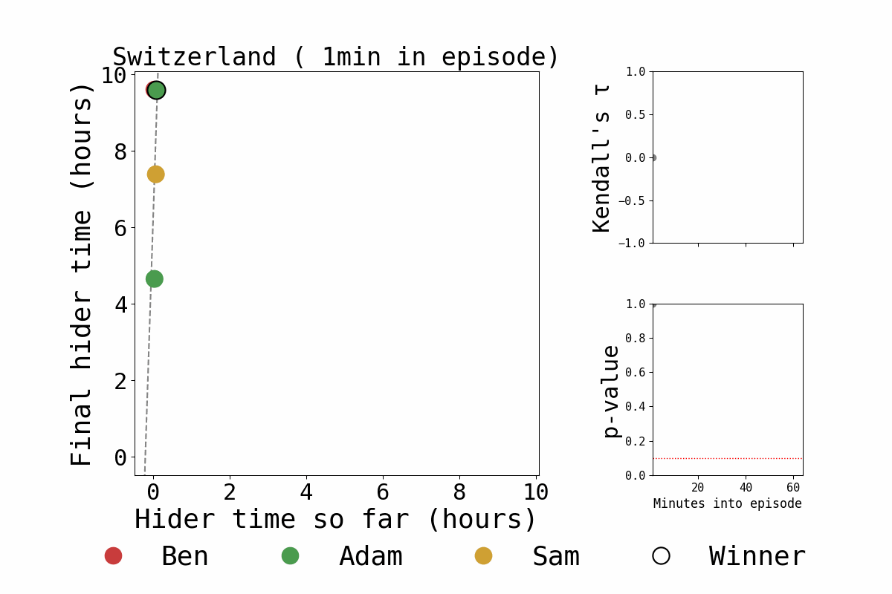
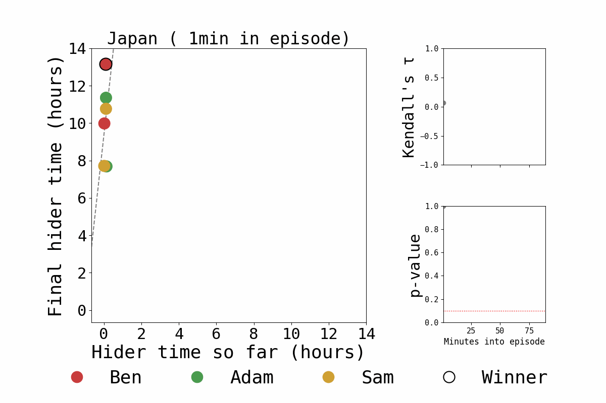
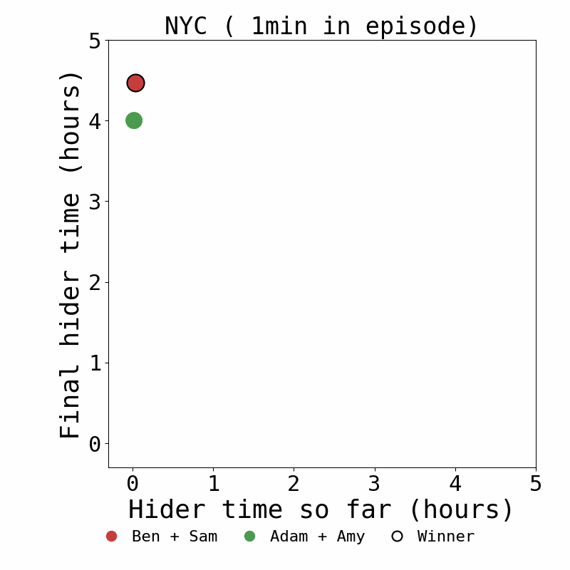
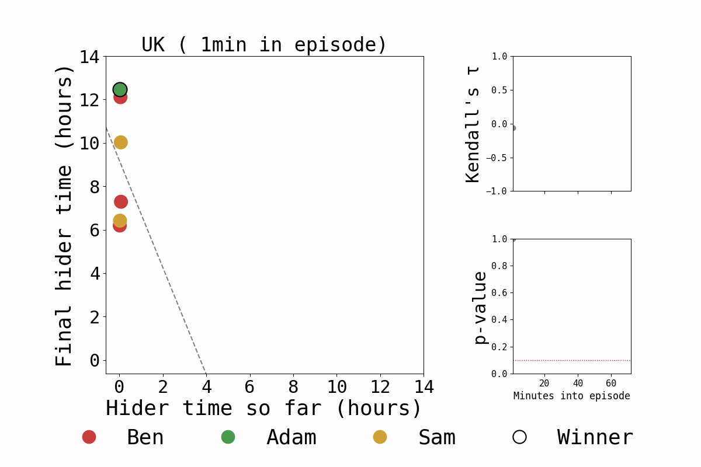

[Back to main page]
Jetlag: The Game Hide and Seek narrative tension analysis
When you are a fan of something like Jetlag: The Game, a natural question to ask yourself is whether the show is actually entertaining. After all, it would be a terrible situation to be entertained by something, and not have a comprehensive, data-driven analysis to validate those feelings. To address this concern, for the four Hide and Seek seasons of Jetlag: The Game (as of February 2026), I went ahead and checked this.
Each plot corresponds to a season. Each dot corresponds to a different run, colored by the identity of the hider(s). The y-axis displays the final hider time of that run (including time bonuses). The x-axis displays the hider time X minutes into the episode, where the animation in the GIF steps through values of X. The side panels track Kendall's 𝜏 and the corresponding p-value (excluding NYC, which only has two runs).
For a given season, high 𝜏 and low p-value X minutes into the episodes indicates that the hider's time X minutes into the episode has substantial (rank) correlation with the hider's final time. For example, if there was already high 𝜏 and low p-value 10 minutes in, this would mean that 10 minutes into an episode, one would already be able to predict whether it is a winning run.
Fortunately the below visualizations show this is not the case. There is no clear relationship between hider time X minutes into the episode and the hider's final time until quite late into the episode.
In conclusion, the show is entertaining.



